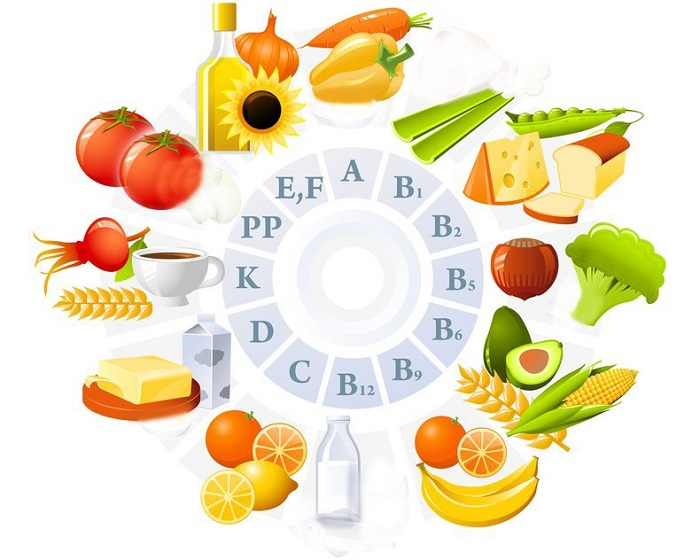

назад
|
Витамины – органические вещества, без которых нормальное функционирование организма человека просто невозможно.
Так как, некоторые витамины человеческим организмом не вырабатываются, а некоторые в недостаточном количестве синтезируются, значит, они должны поступать
с пищей, причем в достаточном для организма количестве. Исследования показывают, что 90% всех витаминов оказываются в нашем организме благодаря продуктам питания.
|

|
На сегодняшний день известно примерно 20 видов витаминов и подобных им органических соединений. Их недостаток существенно отражается на организме человека, например, вызывает авитаминоз, следствием чего будет:
- снижение иммунитета;
- снижение работоспособности;
- повышенная утомляемость;
- возрастание риска инфицирования организма;
- развитие заболеваний.
Вообще, человеку необходимо не так уж много витаминов, это сотые граммы, но отсутствие даже такого малого их количества может привести к серьезным заболеваниям.
Наличие витаминов в продуктах питания напрямую зависит от категории
самого продукта, длительности и способа его хранения, вида последующей обработки,
процесса приготовления и от многих других факторов. Перечислим основные витамины, которые просто необходимы нашему организму, а также и продукты, содержащие их:
- Витамин A (ретинол) – содержится в печени рыб и животных, рыбьем жире, сливочном масле, яичных желтках.
- Каротин (провитамин витамина A) – очень его много в моркови, листьях петрушки и шпината, абрикосах, тыкве.
- Витамин D (кальциферол, эргокальциферол – это витамин D2, холекальциферол - витамин D3) – образуется частично в клетках кожи под непосредственным воздействием ультрафиолета. Самое большое их количество содержится в молоке и во всех молочных продуктах, тунце, рыбьем жире, сардинах, лососе, сельди.
- Витамин E (токоферол) – имеется в растительных маслах, яйцах, печени животных, бобовых, злаковых, арахисе, семечках подсолнуха, миндале, ягодах шиповника, броколли, облепихе, рябине, черешне, листовых овощах.
- Витамин K – синтезируется где-то половина суточной нормы микроорганизмами в кишечнике человека. Извне недостающее количество их можно получить из растительных продуктов: белокочанной и цветной капусты, листовых зеленых овощей, огурцов, броколли, помидор, кабачков, зеленого горошка, картофеля, спаржи, тыквы, злаковых, оливкового и соевого масел, зеленого чая, бананов, киви, авокадо, а также из продуктов животного происхождения – молока, печени, рыбьего жира, яиц.
- Витамины группы B (ниацин, рибофлавин, тиамин и др.) – водорастворимые витамины. Главная их отличительная особенность от других состоит в том, что в организме они не накапливаются и должны ежедневно поступать с потребляемой пищей. Источниками являются: горох, рис нешлифованный, фасоль, свинина, печень, почки, зерновой хлеб, сыр, молоко, жирная рыба, яйца, мясо птицы, картофель, орехи, цветная капуста, всевозможные сухофрукты.
- Витамин P (биофлавоноиды) – более всего его содержится в цитрусовых плодах: лимонах, апельсинах, грейпфрутах, а также много его и в шиповнике, ежевике, черешне, абрикосах, черной смородине, черноплодной рябине, петрушке, салатных листьях. Также и в напитках – чае, кофе, вине и пиве.
- Витамин H (биотин) – им богата говяжья печень, молоко, орехи, яичный желток, фрукты.